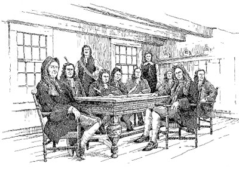

|
The so-called Dongan Charter of 1686 established Albany as a corporate entity. From that time on, the city's municipal rights and privileges have made its growth and development substantially different from that of the settlers and settlements of the surrounding countryside known as greater Albany County.  The city's governing body consisting of the mayor, aldermen, and assistants, was commonly referred to as the Albany Corporation. As time passed, these city fathers were more often called the Common Council. The mayor and recorder (deputy mayor) were appointed by the governor. The sheriff and the clerk (both of whom served the city and the county) also were appointed by the governor. After those provincial appointees, the officers of Albany's municipal government were chosen locally. Two aldermen and two assistants were elected annually on September 29 by the principal (male and propertied) residents of each of the city's three wards. Aldermen usually were prominent and active merchants - most often under the age of fifty. These important personages attended regular meetings at city hall, served on functional committees, sat as magistrates, and served as Commissioners of Indian Affairs. These Albany mainliners represented the major families and constituted the functional backbone of "home rule" from 1686 on. A chamberlain or treasurer was elected annually by the members of the council (usually on September 29). The chamberlain was the city and county's chief fiscal officer, handled all public funds and was bonded. He was charged with keeping records of all financial transactions. His duties were proscribed in the Laws of the city published in 1773. Anthony B. Bradt served as treasurer from 1698 until his death in 1722. James Parker was confirmed as the first city marshall in 1686. That office was salaried and functioned as the council's sergeant-at-arms, services administrator, supply chief, and also as its messenger. Johannes Seeger held that post over four decades from 1730 to 1768 and was succeeded by his son. John Ostrander served as marshall during the early 1770s and into the first years of the Revolutionary struggle. Thomas Seeger (son of Johannes) served again from 1778 probably to 1784. Beginning in 1784, newcomer James Elliot held the office - at least thru 1792. Like most of his predecessors, he was paid twice a year in a number of ways. Each year, the council appointed firemasters, constables, assessors, porters, a cryer (perhaps also called "bellman"), and other resident civil servants including watchmen, gatekeepers, and whippers. It also licensed cartmen, ferrymen, and other contractors to perform specified services for fees. These "city retainers" were the predecessors of today's civil servants. In that way, several dozen additional Albany families were tied directly to city hall. Adult men born within the city of Albany were accorded the right to vote and to participate in business, production, and service activities. This right was called the "Freedom" of Albany. Newcomers also were required to possess the "Freedom" or else could be fined for ilegal trading. "Freedoms" were purchased or otherwise attained from the city council. This provision, however, seems to have been selectively enforced! Early Albany's municipal government was participatory and ran without additional paid employees until the era of the American Revolution. Between 1775 and 1778, the incorporated city government suspended itself. The extra-legal Committee of Correspondence functioned in its place! Upon resuming operations in 1778, the corporation addressed an expanded municipal agenda with a more Albany city-based agenda. We have begun to compile a roster of Albany officeholders from 1686 to 1800.
Sources: This exposition is extends the discussion begun in Stefan Bielinski, Government By the People. The clerk was the official records keeper for the city of Albany and for Albany County as well for the most part throughout the eighteenth century or until the county was partitioned and new towns added - mostly following the War for Independence. The clerk was responsible for taking and keeping the minutes of the city government. At least some parts of those records have been printed in a number of sources and the manuscripts held at the ACHOR have been microfilmed. The clerk also issued legal writs and warrants, approved and filed (registered) deeds, and was a key operative in the public business of Albany and its hinterland. Thus, the appointment was targeted and sought after by local and provincial authorities and by businessmen as well. Robert Livingston was the first and long-time Albany clerk. The office passed to his son Philip in 1721. Upon his death in 1749, the office was bestowed on young John Colden.
Chamberlains with years of appointment: Jan
Janse Bleecker, 1686-89; Jan
J. Becker, 1689-93; Johannes
Appel, 1693-95; Johannes Ten
Broeck (1740); Gerrit C. Vandenbergh
(1743); Cornelis Van Santvoort,
1749-50; John G. Roseboom,
1751-64; Hendrick Bleecker, Jr.,
1765-75, 1778; Gerrit Ryckman,
1778-85; Elbert Willett, 1786-?
first posted 2000; last revised 9/13/12/font size> |